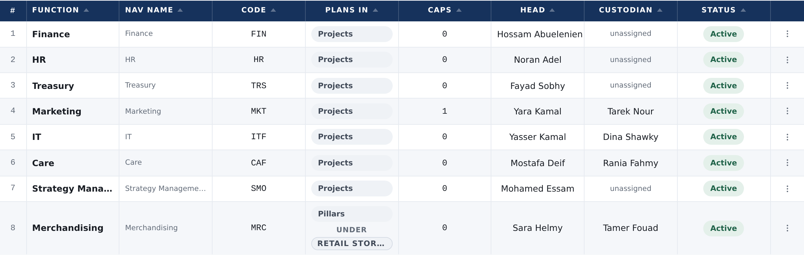

01Your correction
“the capability is normally owned by a function and the function can have an owner and a custoidna. and the function owner and custodian can handle the capability and ofcourse can handle the function plans as well. would that be easier to build?”
Yes — far easier. Most of it is already there. A function already has two named people, and both already reach its capabilities. I checked rather than assumed, and the measurements are below.
The first version of this page put an owner and a custodian on the capability itself — two new columns, a new thing to store, and a new rule about who answers first. All of that goes. Nothing is stored, no column is added, and nobody’s rights move.
02The two people already exist
Setup › Functions carries a Head and a Custodian for every function, both settable, today. Marketing — the one function holding a capability — has both filled in.

03And they already reach the capability
One person, measured before and after being given each seat, so the difference is the seat and nothing else. No changes to the product.
| The same person | The function’s pages | Its capability, in their list | The capability’s pages |
|---|---|---|---|
| Holding nothing | can’t open | not there | can’t open |
| Made the function’s Head | can open | appears | can open |
| Made the function’s Custodian | can open | appears | can open |
So “the function owner and custodian can handle the capability” is how the platform already behaves. Nothing had to be built for it.
04“Handle” is one setting, not a build
Out of the box those two people can see a function and its capability. Letting them change the plans is one cell on Roles & access — the row for the function’s head, the own-supporting-function column.
| The function’s head | The function’s plans | Its capability’s plans |
|---|---|---|
| As the platform ships | can read | can read |
| With that one cell opened | can change | can change |
The capability follows the function automatically. You never set anything twice.
05What checking it found
One real fault, in exactly this area, on the platform as it stands on this branch — found by measuring every person against the demo’s own capability, with nothing made up.
Yara Kamal runs Marketing, which holds Product Mindset. The rule says she may enter figures there. The screen does not let her — and it still offers her the Submit button, so she is asked to send a report she was never allowed to fill in.
The cause is one line: when the page asks “may this person report here?”, a capability is sent to the business unit column instead of the supporting function one. She has nothing in the unit column, so the answer is no. On the function itself she can report perfectly.
One line to fix, and it is squarely inside what you have just asked for.
06One word to settle
You said owner and custodian. The platform says Head and Custodian for a function; a business unit says BU head and Strategy custodian. So the two people are there — the first one is called Head rather than Owner.
Leave it as Head, or rename the label to Owner so a function reads the way a unit does. It is a label only — nothing behind it moves, and nobody loses anything either way. Say which and I will do it with the rest.
07The platform’s own note agrees with you
Under the Capabilities table, and in the knowledge base, the platform says a custodian is named after the function and never after a capability — because a function may hold several, so naming somebody after one breaks the moment a second arrives.
In the first version of this page I had that sentence down as something to correct. With your direction it is right, and it stays. Worth saying plainly: the product had already reasoned its way to the answer you just gave.
08So what is actually left to build
Only your first ask, plus the fault above.


- The reporting fault One line, so a function’s head and custodian can enter figures on their capability — and a check that goes red on today’s build first.
- The builder’s third kind Capabilities in the chooser, and a new one can be made there.
- The word, if you want it Head becomes Owner on a function, label only.
Nothing above is built. Every picture is the real platform, same build on both sides, and every table on this page is a measurement rather than a claim.